Statistics
Chapter x: Statistical summaries
Shih Chien University
2026-05-31
Revealing uncertainty
Revealing uncertainty
When data carry information about uncertainty — whether derived from a statistical model, a resampling procedure, or distributional assumptions — visualising that uncertainty alongside the central estimate is strongly recommended.
ggplot2 provides four families of geoms for this purpose. The appropriate choice depends on two criteria: (1) whether the x-axis is discrete or continuous, and (2) whether you wish to show the range only or both the range and the centre of the interval.
| x type | Display | Geoms |
|---|---|---|
| Discrete | Range only | geom_errorbar(), geom_linerange() |
| Discrete | Range + centre | geom_crossbar(), geom_pointrange() |
| Continuous | Range only | geom_ribbon() |
| Continuous | Range + centre | geom_smooth(stat = "identity") |
All of these geoms assume the distribution of y conditional on x, and use the ymin and ymax aesthetics to define the extent of the interval. To display intervals along the x-axis instead, apply a coordinate flip (see Chapter 15).
Setting up the example data
The ymin and ymax aesthetics define the lower and upper bounds of each interval. Here they are constructed by subtracting and adding the standard error se from the point estimate y.
Range and centre geoms (discrete x)
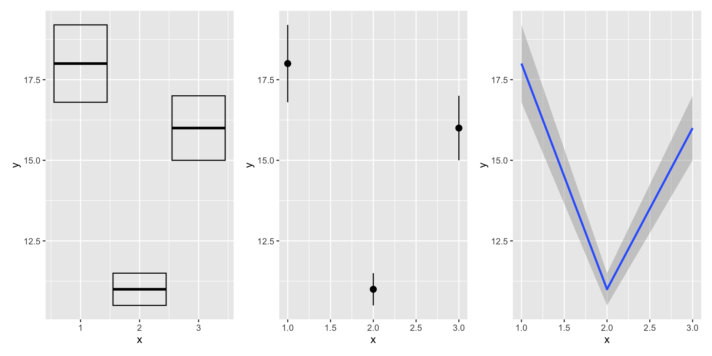
geom_crossbar()draws a box whose middle line marks the centre estimate.geom_pointrange()combines a central point with a vertical line spanning the interval.geom_smooth(stat = "identity")renders a shaded ribbon plus a line, treating the suppliedymin/ymaxvalues directly without any statistical transformation.
Range-only geoms
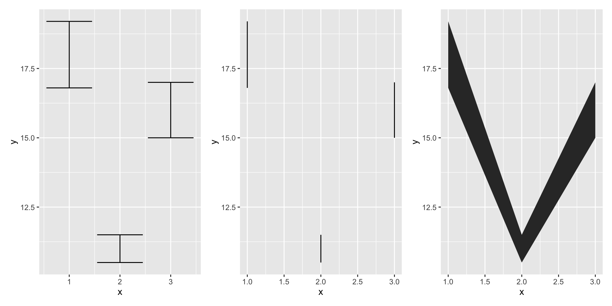
geom_errorbar()renders the classic T-bar error bar with caps atyminandymax.geom_linerange()draws a plain vertical line with no caps.geom_ribbon()fills the area betweenyminandymax, making it well-suited to continuous x axes.
A note on computation
ggplot2 does not compute standard errors automatically. Because the formula for standard errors differs depending on the statistical model or assumption, the calculation must be performed by the analyst before passing the data to ggplot2. For guidance on computing and working with model-based uncertainty, refer to R for Data Science (https://r4ds.had.co.nz).
Weighted data
Weighted data
When the input data consist of aggregated summaries — where each row represents multiple underlying observations — it is important to account for the unequal importance of each row. This section illustrates the concept using the built-in midwest dataset, which contains county-level statistics from the 2000 US Census for Midwestern states.
The dataset is composed mainly of percentages (e.g., percent white, percent below poverty line, percent with a college degree) together with descriptive information such as total area and total population.
What to weight by?
Three natural choices exist:
- Nothing — each county is treated as equally important; the plot shows the distribution of counties.
- Total population — each county is weighted by the number of people it contains; the plot reflects the distribution of individuals.
- Area — each county is weighted by its geographic size; useful when spatial coverage matters more than population.
The choice of weighting variable changes the question being asked and can substantially alter the conclusions drawn from the visualisation.
Weighting with the size aesthetic
For simple geoms such as points and lines, the size aesthetic provides a direct visual encoding of a weighting variable:
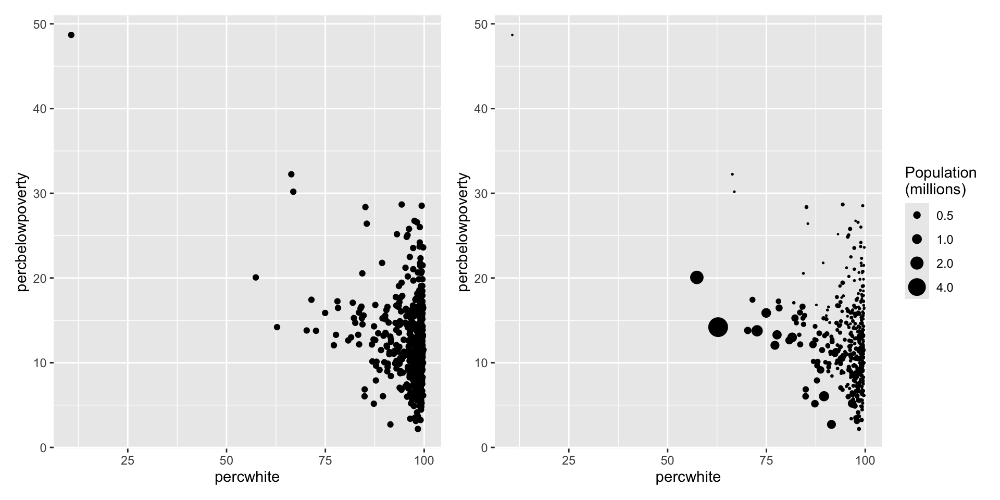
The right panel reveals that large-population counties tend to cluster in a different region of the plot than small-population counties — a pattern invisible in the unweighted version.
Weighting statistical transformations
For geoms that involve an internal statistical computation (smoothers, histograms, density plots, boxplots, quantile regressions), weights are supplied via the weight aesthetic. This aesthetic is not rendered visually and produces no legend, but it modifies the underlying calculation.
The example below shows how weighting a linear smooth by population changes the estimated relationship between percent white and percent below the poverty line:
p1 <- ggplot(midwest, aes(percwhite, percbelowpoverty)) +
geom_point() +
geom_smooth(method = lm, linewidth = 1)
p2 <- ggplot(midwest, aes(percwhite, percbelowpoverty)) +
geom_point(aes(size = poptotal / 1e6)) +
geom_smooth(aes(weight = poptotal), method = lm, linewidth = 1) +
scale_size_area(guide = "none")
p1 | p2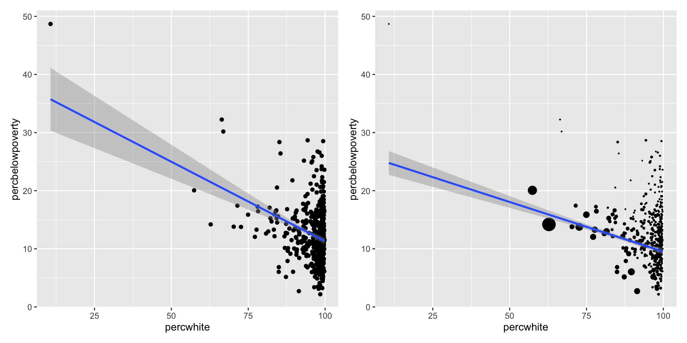
Weighting histograms
Applying a weight aesthetic to geom_histogram() shifts its interpretation from number of counties to number of people. The shape of the distribution — and therefore the conclusions drawn — can change substantially:
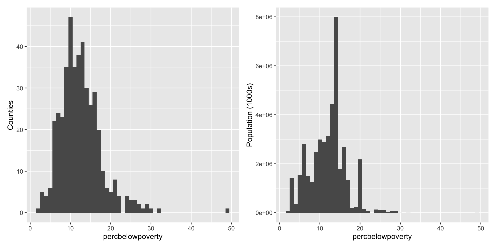
The left histogram shows that most counties have low poverty rates. The right histogram reveals that most people also live in such counties, but the shape of the distribution shifts noticeably when population size is accounted for.
Diamonds data
Diamonds data
The remaining sections in this chapter draw on the diamonds dataset, which is bundled with ggplot2. It contains price and quality information for approximately 54,000 diamonds and serves as a useful testbed for techniques suited to large datasets.
# A tibble: 6 × 10
carat cut color clarity depth table price x y z
<dbl> <ord> <ord> <ord> <dbl> <dbl> <int> <dbl> <dbl> <dbl>
1 0.23 Ideal E SI2 61.5 55 326 3.95 3.98 2.43
2 0.21 Premium E SI1 59.8 61 326 3.89 3.84 2.31
3 0.23 Good E VS1 56.9 65 327 4.05 4.07 2.31
4 0.29 Premium I VS2 62.4 58 334 4.2 4.23 2.63
5 0.31 Good J SI2 63.3 58 335 4.34 4.35 2.75
6 0.24 Very Good J VVS2 62.8 57 336 3.94 3.96 2.48Variables in the dataset
The dataset captures the four C’s of diamond quality:
carat— weight of the diamondcut— quality of the cut (Fair, Good, Very Good, Premium, Ideal)color— diamond colour, from D (best) to J (worst)clarity— a measure of internal inclusions (I1 to IF)
Five physical measurements are also included:
x,y,z— length, width, and depth in millimetresdepth— total depth percentage:z / mean(x, y) × 100table— width of the top facet relative to the widest point
The dataset has not been rigorously cleaned, so it provides opportunities to observe both genuine patterns and data-quality artefacts.
Displaying distributions
Displaying distributions
The appropriate geom for visualising a distribution depends on several factors: the dimensionality of the distribution, whether the variable is continuous or discrete, and whether interest lies in the conditional or marginal distribution.
The histogram: geom_histogram()
For a single continuous variable, the histogram is the most fundamental display. The key tuning parameter is binwidth:
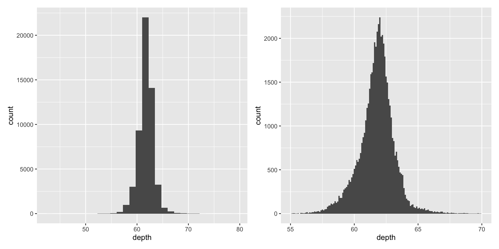
Choosing an informative binwidth is essential — the default bin count of 30 rarely reveals the most interesting structure. Widening the x-axis range with xlim() and narrowing binwidth uncovers fine-grained features that would otherwise be masked.
Always report the chosen binwidth in the figure caption when publishing.
Comparing distributions across groups
Three strategies are available when comparing distributions across a categorical variable:
- Small multiples —
facet_wrap(~ var)— shows one complete histogram per group, making shapes easy to compare. - Frequency polygon —
geom_freqpoly()— overlays count-based curves for each group on a single panel. - Conditional density —
geom_histogram(position = "fill")— stacks bins and scales each x position to a common height, showing the relative composition at every point.
p1 <- ggplot(diamonds, aes(depth)) +
geom_freqpoly(aes(colour = cut), binwidth = 0.1, na.rm = TRUE) +
xlim(58, 68) +
theme(legend.position = "none")
p2 <- ggplot(diamonds, aes(depth)) +
geom_histogram(aes(fill = cut), binwidth = 0.1, position = "fill",
na.rm = TRUE) +
xlim(58, 68) +
theme(legend.position = "none")
p1 | p2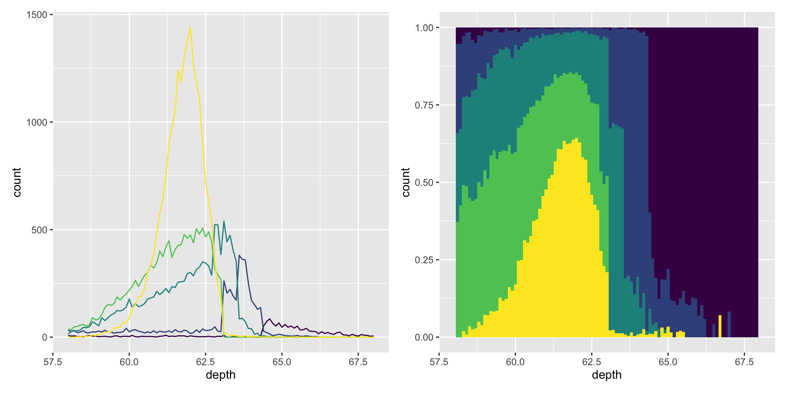
The underlying statistic: stat = "bin"
Both geom_histogram() and geom_freqpoly() use the same underlying statistical transformation, stat_bin(). This stat computes two output variables:
count— the number of observations in each bin (mapped to y by default, as it is the most directly interpretable).density— count divided by total count, then divided by bin width. Mapping density to y makes the area under each bar sum to one, which facilitates shape comparisons across groups of different sizes.
Kernel density estimation: geom_density()
An alternative to bin-based displays is the kernel density estimate (KDE). geom_density() places a Gaussian kernel at each data point and sums the resulting curves into a smooth estimate of the underlying distribution.
KDEs are most appropriate when the true distribution is known or assumed to be smooth, continuous, and unbounded. The adjust argument scales the default bandwidth (values > 1 produce smoother estimates; values < 1 produce rougher ones):
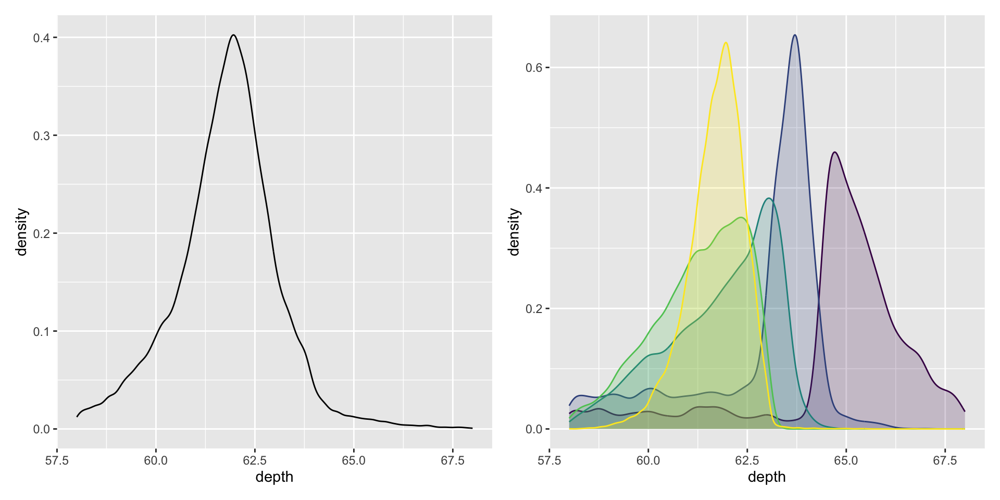
Note that each KDE is normalised so that its total area equals one. As a consequence, information about the relative sizes of the groups is lost.
Compact multi-group summaries
When the goal is to compare many distributions simultaneously, detail must be traded for compactness. Three geoms are particularly useful:
geom_boxplot() — the box-and-whisker plot summarises a distribution using five statistics (minimum, Q1, median, Q3, maximum) and flags potential outliers. It occupies minimal space and scales well to many groups.
For a continuous x variable, the group aesthetic combined with cut_width() partitions the data into bins:
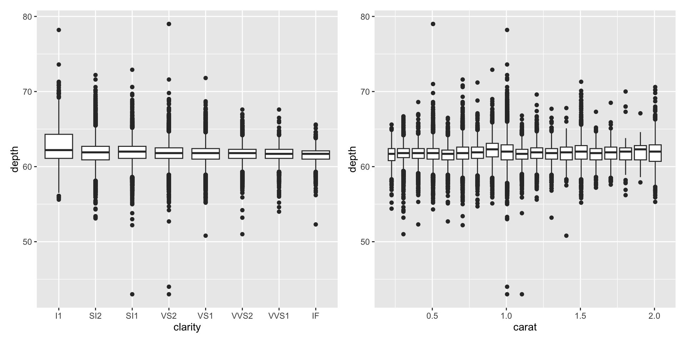
geom_violin() — the violin plot is a mirrored, smoothed density estimate rendered in the same spatial footprint as a boxplot. It preserves more distributional information than a boxplot while remaining compact:
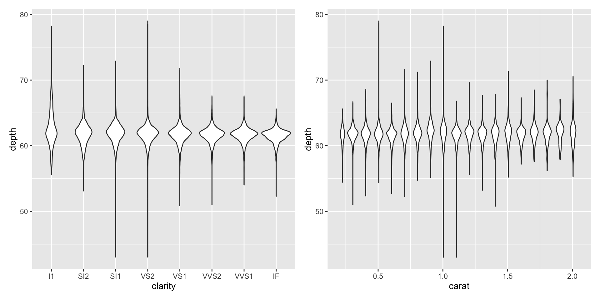
geom_dotplot() — places a point for each individual observation, stacking them to avoid overlap. It retains the raw data and reveals distributional shape simultaneously. It is best suited to smaller datasets where overplotting is not a concern.
Exercises
What
binwidthreveals the most interesting structure in the distribution ofcarat?Draw a histogram of
price. What unusual or striking patterns do you observe?How does the distribution of
pricevary across levels ofclarity?Overlay a frequency polygon and a density estimate for
depthin a single plot. What computed variable must you map toyto make the two displays share the same scale? (You may modify eithergeom_freqpoly()orgeom_density().)
Dealing with overplotting
Dealing with overplotting
The scatterplot is among the most effective tools for exploring the relationship between two continuous variables. However, with large datasets, many points will be rendered at the same or near-identical positions, a problem called overplotting. In severe cases, only the boundary of the data cloud is visible, and any interpretation of the interior is unreliable.
Several strategies exist for mitigating overplotting. The most appropriate approach depends on the size of the dataset and the degree of overlap.
Strategy 1: Modify point appearance
For moderate overplotting, adjusting the visual properties of points can be sufficient. The following code compares three options on a sample of 2 000 points from a bivariate normal distribution:
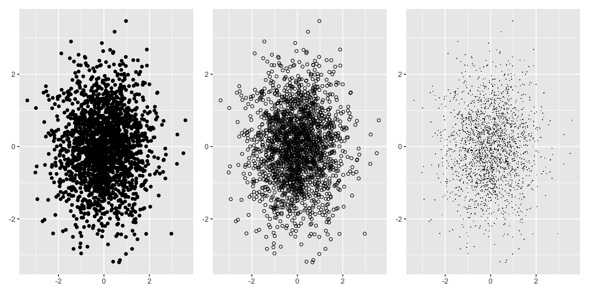
Hollow glyphs (shape = 1) and pixel-sized points (shape = ".") allow some visual penetration into dense regions that solid filled circles would obscure.
Strategy 2: Alpha blending (transparency)
alpha sets the transparency of each point. When specified as a fraction 1/n, the surface reaches full opacity only when n points are stacked on top of one another:
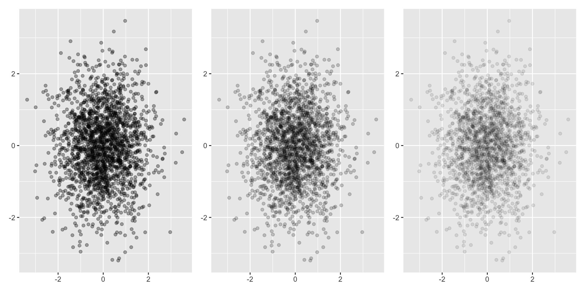
Values of alpha smaller than approximately 1/500 are rounded down to zero, producing completely transparent (invisible) points. Alpha blending is most effective when combined with hollow glyphs.
Strategy 3: Jittering
When the data contain a degree of discreteness, geom_jitter() adds a small random offset to each point’s position, reducing exact overlaps. The default jitter magnitude is 40% of the data resolution; this can be adjusted with the width and height arguments.
Jittering is most meaningful when the underlying values are genuinely distinct but rounded to common values. It should not be applied to truly continuous data where positional accuracy matters.
Strategy 4: 2D binning
Overplotting can be reframed as a two-dimensional density estimation problem. Rather than plotting individual points, the plot area is divided into bins and the count within each bin is displayed.
Square bins — geom_bin2d():
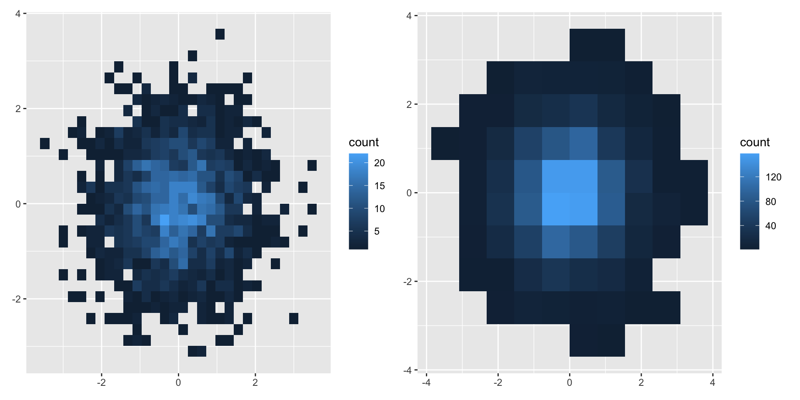
Hexagonal bins — geom_hex():
Research by Carr et al. (1987) demonstrated that hexagonal bins reduce visual artefacts compared with square bins, because the hexagonal tessellation is more isotropic. geom_hex() requires the hexbin package:
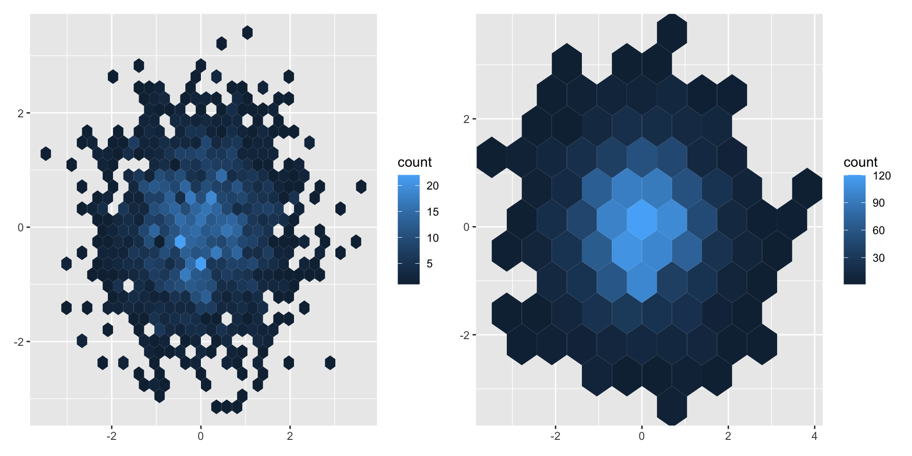
Both geom_bin2d() and geom_hex() accept bins (number of bins per axis) and binwidth (physical width of each bin) arguments to control granularity.
Strategy 5: 2D density estimation
stat_density2d() estimates the bivariate density and can be combined with any geom capable of displaying a third dimension (see Section 5.7). This approach produces smooth contours but involves more computational overhead than binning.
Strategy 6: Add a summary layer
Adding geom_smooth() on top of a scatterplot draws a smooth conditional mean, guiding the eye toward the underlying trend without removing the raw data. Other summary geoms (see Section 5.6) can serve a similar role.
Statistical summaries
Statistical summaries
geom_histogram() and geom_bin2d() are specialised combinations of a familiar geom (geom_bar() / geom_raster()) with a statistical transformation (stat_bin() / stat_bin2d()). These stats aggregate observations into bins and return the count per bin. What if a summary other than count is desired?
stat_summary_bin() and stat_summary_2d() extend this idea to arbitrary summary functions, enabling the display of means, medians, or any user-defined statistic within each bin.
1D summaries with stat_summary_bin
The first plot below counts diamonds by colour category (equivalent to the default geom_bar() behaviour). The second replaces the count with the mean price per colour group, demonstrating how stat = "summary_bin" and fun = mean work together:
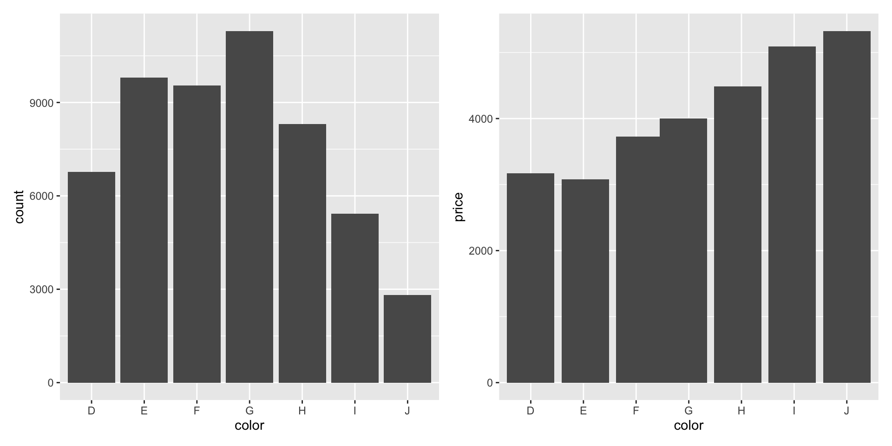
2D summaries with stat_summary_2d
The analogous tools exist for two-dimensional binning. The left plot below counts observations falling in each (table, depth) bin. The right plot fills each bin with the mean price, exposing how diamond value relates jointly to these two physical dimensions:
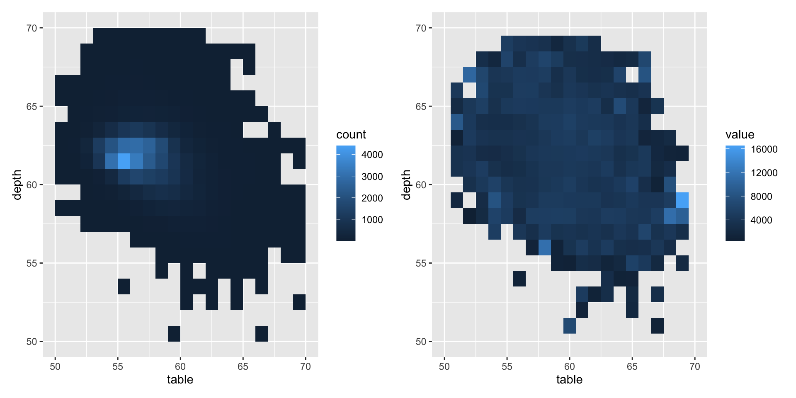
Key arguments
fun— the summary function to apply within each bin (e.g.,mean,median,sd, any custom function).stat_summary_bin()can also produceyminandymaxaesthetics, making it suitable for displaying measures of spread alongside a central estimate.- Bin size is controlled with
binsorbinwidth, as for the standard histogram.
Consult ?stat_summary_bin and ?stat_summary_2d for full documentation. For more complex modelling workflows, pre-computing summaries in a data wrangling step (see R for Data Science) offers greater flexibility.
Surfaces
Surfaces
The preceding sections covered one-to-one geoms (one geometric object per row) and statistical geoms (aggregations over rows). A third scenario arises when the goal is to represent a three-dimensional surface — a value z defined over a grid of (x, y) coordinates.
ggplot2 does not produce true 3D plots, but provides several 2D representations of surfaces. These geoms differ primarily in how the third dimension z is encoded:
Contour plots — geom_contour()
geom_contour() draws isolines connecting points of equal z value. The faithfuld dataset (built into ggplot2) contains a bivariate density estimate for the Old Faithful geyser data:
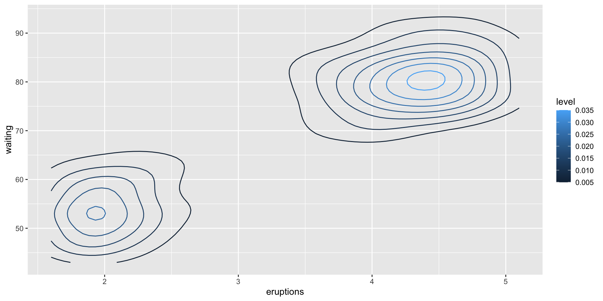
The after_stat(level) variable refers to the contour level computed internally by the stat — it does not exist in the raw faithfuld data. This is the modern replacement for the deprecated ..level.. notation. Mapping it to colour allows the contour lines themselves to convey the magnitude of the density.
Heat maps — geom_raster()
When a grid-based surface is to be shown as a colour-encoded tile map, geom_raster() provides an efficient rendering. It is optimised for uniform grids where all tiles share the same dimensions:
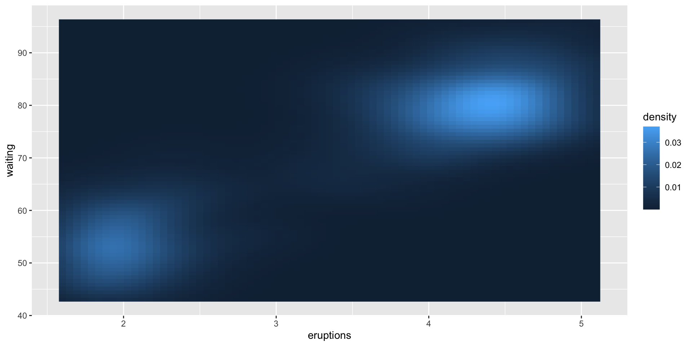
Colour encodes the density value at each grid point, giving a heat-map view of the surface. Use a sequential or diverging colour scale to make the magnitude ordering perceptually accessible.
Bubble plots — geom_point() with size
For sparser grids, encoding the surface value as point size preserves the positional layout while avoiding the visual clutter of a full raster. Note that bubble plots become unreadable when observation density is high:
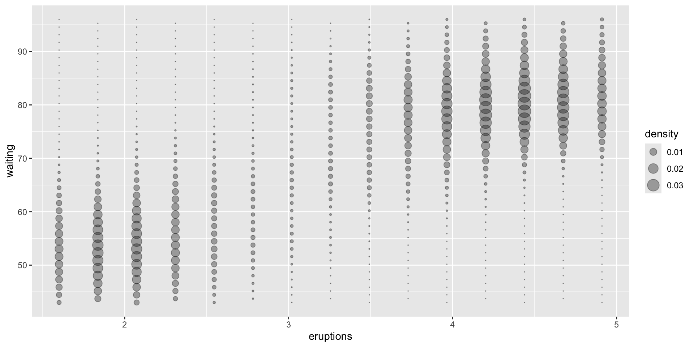
scale_size_area() ensures that the area of each bubble is proportional to the underlying value, which is perceptually more accurate than making the radius proportional.
Choosing among surface geoms
| Geom | Encodes z via | Best when |
|---|---|---|
geom_contour() |
Line colour | Isolines and directional gradients |
geom_raster() |
Fill colour | Dense, uniform grids |
geom_point() |
Point size | Sparse grids; fewer than ~200 points |
For interactive 3D surfaces (true perspective views, rotatable plots), the rgl package (http://rgl.neoscientists.org) provides the necessary tools beyond ggplot2’s scope.
Acknowledgement
Copyright notice. These teaching materials have been adapted from ggplot2: Elegant Graphics for Data Analysis (3e). All rights are reserved by the original authors and publishers.
Non-commercial use only. These materials are strictly intended for educational purposes and must not be used for commercial gain or profit.
Proper attribution. Any reproduction, distribution, or use of these materials must provide proper attribution to the original source.
References

Elementary Statistics: A Step-by-Step Approach